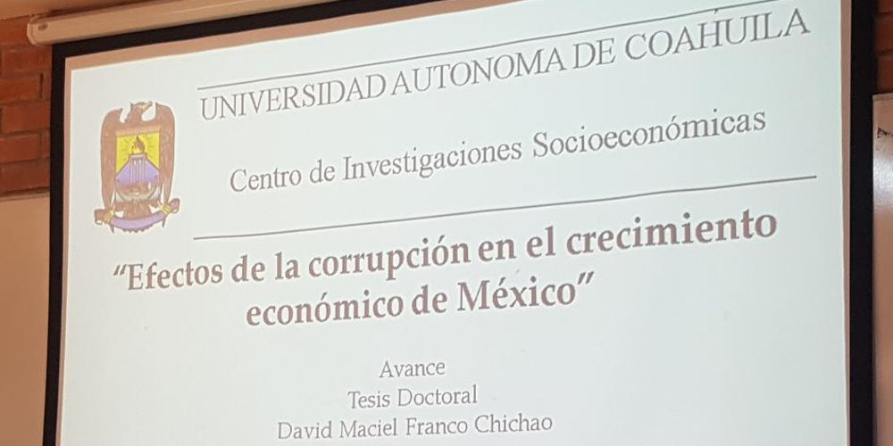
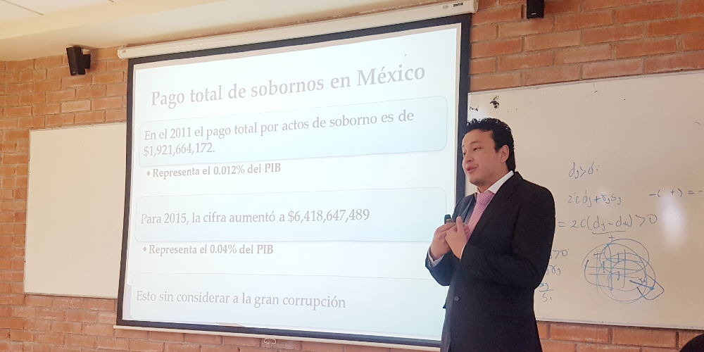

Tesis doctoral en UAdeC, advierte sobre efectos de la corrupción en entidades del país
16 marzo 2018
Comunicado de Prensa.
Sistema Anticorrupción del Estado de Coahuila. Consejo de Participación Ciudadana.
Saltillo, Coahuila.- Gracias a la invitación del investigador y estudiante de nivel Doctorado en Economía Regional, del Centro de Investigaciones Socioeconómicas de la Universidad Autónoma de Coahuila (UAdeC), David Maciel Franco Chichao, quien presentó un avance de su tesis doctoral, integrantes del Consejo de Participación Ciudadana del Sistema Anticorrupción de Coahuila, conocieron detalles de la prevalencia de actos de corrupción y las afectaciones económicas de esta actividad en las entidades del país.
Durante el coloquio que se llevó a cabo el viernes 16 de marzo de 2018, en las instalaciones del Centro de Investigaciones Socioeconómicas en la Unidad Campo Redondo de la UAdeC en Saltillo, el postulante presentó el tema "Efectos de la Corrupción en el Crecimiento de México", cuyos alcances involucran los sobornos que paga un ciudadano al realizar trámites en oficinas federales, estatales o municipales.

En esta jornada estuvieron presentes Manuel Gil, presidente del Consejo de Participación Ciudadana y las consejeras Ana Yuri Solís y Lourdes de Koster, así como integrantes de la Secretaría Ejecutiva del Sistema Estatal Anticorrupción, quienes escucharon la ponencia que además fue atestiguada por los investigadores del CISE, Gustavo Félix Verduzco, Rogelio Rendón Hernández, Georgina Alenka Guzmán Chávez y Miguel Ángel Martín López, coordinadores de este proyecto, además del director del CISE, Gilberto Aboites Manrique.
Según el investigador David Franco Chichao, la corrupción afecta al crecimiento económico del país y los estados, porque existen trámites que deben realizarse en oficinas públicas donde el pago de sobornos se normaliza y genera pérdida de la confianza en las instituciones.

Esto, agregó en su ponencia Franco Chichao, implica un gasto extraordinario para quien paga por agilizar la instalación de una empresa, para evitar que le apliquen una multa de tránsito o sanción administrativa y hasta para acceder a una cita con el médico, en el caso de instituciones públicas, por ejemplo.
Cabe mencionar que la tesis doctoral "Efectos de la Corrupción en el Crecimiento de México", abarca aspectos locales y con enfoque de género, que permitirán un aporte importante desde la academia, para enfocar políticas públicas que inhiban esta problemática ilegal que es prioridad en la agenda ciudadana.